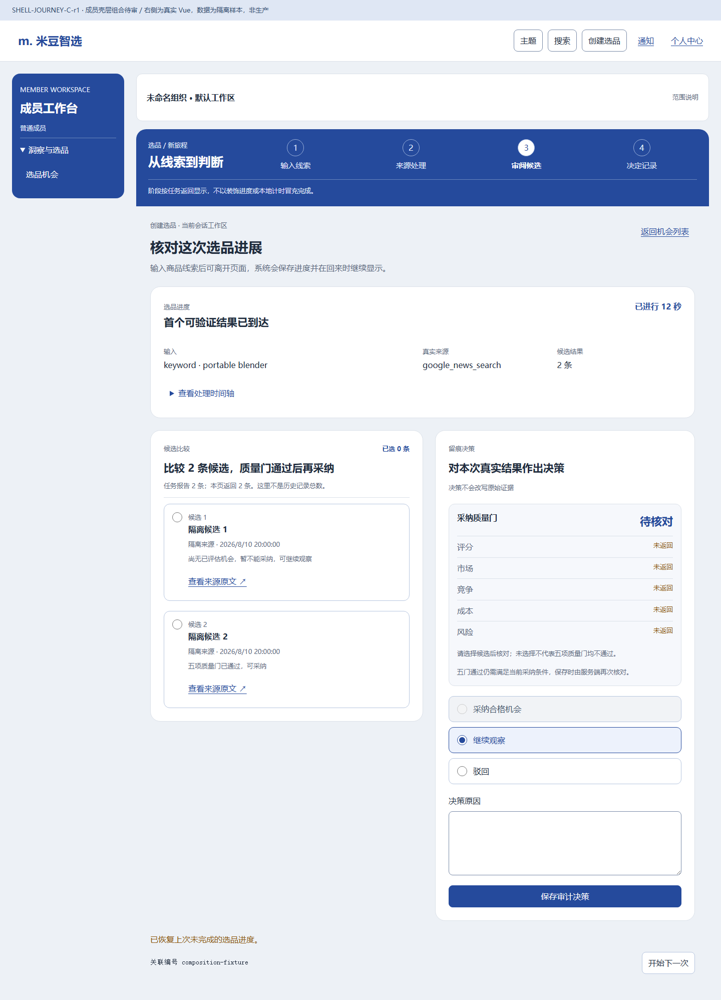
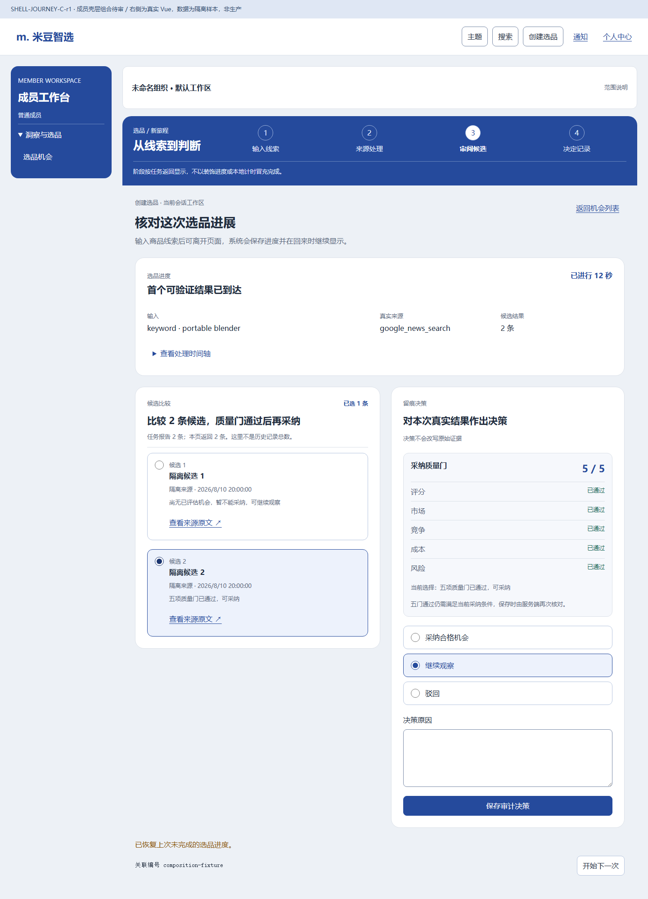

C壳层与P16组合待审
左侧为新壳层提案，右侧为真实P16加组合专用CSS；拦截样本，非生产。横向阶段栏尚未获得批准。
范围说明 · 原获审P16布局与旧壳层对照
1440 / input
1440 / return-draft

1440 / candidate-unselected

1440 / five-gates
390 / input
390 / return-draft
390 / candidate-unselected
390 / five-gates
390 / navigation-open